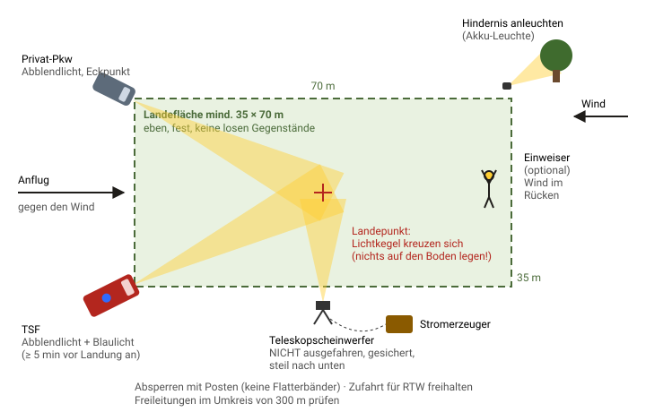

Lektion 1 · Ausleuchtung einer Hubschrauberlandung
Der Nachtlandeplatz in sechs Schritten
Alles, was du als Übungsleiter können musst, bevor du die Übung planst: Was braucht der Pilot, und wie liefert ihr das mit einem TSF und einem Privat-Pkw?
Dein Gewinn nach ca. 15 Minuten
Du kannst die sechs Schritte der Luftrettung frei aufsagen, jede Regel begründen und einen Landeplatz mit eurer eigenen Beladung skizzieren. Das ist das Fundament für das Übungsdrehbuch in Lektion 2.
Primärquelle zum Lesen bzw. Vorführen
„Unterrichtung der Feuerwehren zur Vorbereitung von Nachtlandungen“ – DRF Luftrettung und Landesfeuerwehrverband Schleswig-Holstein, 2022. 61 Folien mit Fotos aus dem Cockpit, direkt für den Theorieteil vor eurer Übung nutzbar. Dazu die zweiseitige DRF-Checkliste, die auch die bayerische Lernbar verlinkt.4
Warum nachts alles anders ist
In Bayern fliegen die Rettungshubschrauber regulär von 7 Uhr bis Sonnenuntergang. Rund um die Uhr sind nur die Intensivtransporthubschrauber in München, Nürnberg und Regensburg im Dienst.3 Nachtlandungen bei euch sind also selten, und gerade deshalb muss jeder Handgriff sitzen.
Nachts fliegen immer zwei Piloten mit Nachtsichtbrillen. Vor der Landung erkunden sie den ausgeleuchteten Platz aus sicherer Höhe (Hocherkundung) und landen dann aus einem steilen Sinkflug.2 Nachtsichtbrillen verstärken das Restlicht und engen das Sichtfeld stark ein.7 Daraus folgen fast alle Regeln: Licht, das blendet, schadet mehr, als es nützt.
Und: Ob der Platz geeignet ist, entscheidet am Ende immer der Pilot. Er kann auch woanders landen.2
Die sechs Schritte
- Auswahl. Bevorzugt einen bei Tag erkundeten Platz, z. B. einen Sportplatz. Er muss mindestens 35 × 70 m groß, eben, fest und befahrbar sein. Über dem Platz und im Umkreis von 300 m darf es keine Freileitungen geben, im Anflugsektor keine hohen Hindernisse. Der RTW muss zufahren können.1
- Vorbereitung und Absicherung. Auf Straßen werden alle Richtungsfahrbahnen gesperrt. Abgesichert wird mit Posten, ohne Absperrbänder. Lose Gegenstände müsst ihr entfernen, denn der Abwind des Rotors wirbelt sie auf.1 Keine Markierungen oder Bodenzeichen auslegen.2
- Ausleuchtung. Die Leuchtmittel stehen an den Eckpunkten. Das Blaulicht läuft ab spätestens 5 Minuten vor der Landung und bleibt an. Alle Hindernisse werden angeleuchtet, das Licht fällt flach und blendfrei in Anflugrichtung. Als Mindestbeleuchtung reichen zwei Kfz mit Abblendlicht.1 Die Lichtkegel kreuzen sich am Landepunkt. Stative werden nicht ausgefahren, gegen Umfallen gesichert und steil nach unten gerichtet.2
- Sprechfunk. Gefunkt wird in der Rufgruppe des Rettungsdienstes der zuständigen ILS. Sprecht den Hubschrauber an und meldet Landeplatz, Hindernisse und Gefahrenstellen.1 Ohne Funkkontakt landet der RTH nicht. Der Pilot kann verlangen, dass ihr das Licht reduziert.2
- Nach der Landung. Nähert euch erst, wenn der Rotor steht oder der Pilot es anzeigt. Bleibt immer in seinem Blickfeld. Nie von hinten annähern: Heckrotor, Lebensgefahr. Es gilt absolutes Rauchverbot.1 Am Hang nähert ihr euch nur von der Talseite.2
- Vor dem Start. Sprecht die Beleuchtung für den Start mit dem Piloten ab und sperrt erneut vollständig ab. Das gilt auch für Polizei und Rettungsdienst.1
Mit eurer Beladung

- TSF + Privat-Pkw erfüllen zusammen schon die Mindestbeleuchtung „2 Kfz mit Abblendlicht“. Der Pkw ist also kein Notbehelf, sondern Teil des Konzepts.
- Teleskopscheinwerfer am Stromerzeuger: eingefahren und seitlich aufgestellt, steil auf den Landepunkt gerichtet und gegen den Abwind gesichert oder festgehalten.2 Bitte nicht auf die Gegenseite stellen, denn dort würde er dem anfliegenden Piloten ins Gesicht leuchten.
- Akkuleuchte: flexibel einsetzbar, um ein Hindernis anzuleuchten (Baum, Mast, Zaun).
Hier widersprechen sich die Quellen
Einweiser: Laut DRF-Checkliste gibt es „eventuell“ einen Einweiser, der seine Position bis zur Landung hält (bei Schnee in der Hocke).1 Laut DRF/LFV-SH-Unterrichtung verlässt der Einweiser die Landestelle vor der Landung.2 Mein Rat: Stellt einen Einweiser nur bei Bedarf und klärt per Funk mit dem Piloten, ob er bleiben soll. Nehmt die Frage mit zur Luftrettung.
Größe: Ältere Unterlagen oder solche für den Tag nennen 20 × 20 m bis 50 × 50 m.8 Für die Nacht gilt die Angabe der Luftrettung: 35 × 70 m.1
Vorgeschmack: Der Funk ist ein Gruppenwechsel
Deinen Wunsch nach Übung mit Handfunkgeräten bringt der Einsatz selbst mit. Die Trupps am Platz sprechen in der DMO-Einsatzstellengruppe, der Hubschrauber ist aber nur über die TMO-Rufgruppe des Rettungsdienstes erreichbar.16 Wer mit dem Piloten spricht, muss die Gruppe wechseln und danach wieder zurück, ohne dass die eigene Mannschaft den Kontakt verliert.
Für die Übung gilt: Niemals die echte RD-Rufgruppe verwenden. Die Lernbar empfiehlt, eine Sondergruppe im Digitalfunk vorher mit der ILS abzuklären.5 Wie das in ein Drehbuch mit Rollen und Funkstrang passt, ist Thema von Lektion 2.
Abrufübung
Schließ zuerst die Augen und sag die sechs Schritte laut auf. Erst dann klickst du.
Die sechs Schritte aufdecken
Auswahl → Vorbereitung & Absicherung → Ausleuchtung → Sprechfunk → Nach der Landung → Vor dem StartTransferaufgabe: euer eigener Platz
Wähle ohne Nachschlagen den Platz in eurem Gemeindegebiet, den du für eine Nachtlandung nehmen würdest. Beantworte drei Fragen: Ist er 35 × 70 m groß? Gibt es Freileitungen im Umkreis von 300 m? Von wo würde der Hubschrauber bei Westwind anfliegen, und wo stehen dann TSF und Pkw? Schick mir deine Antwort, ich gebe dir Rückmeldung.
Fragen?
Frag mich (Claude) direkt im Terminal, z. B. „Wie stelle ich den Teleskopscheinwerfer bei Wind sicher auf?“ oder „Wie formuliere ich die MELDEN-Lagemeldung für die Übung?“. Ich bin dein Tutor für diesen Kurs.
Quellen
- DRF Luftrettung: Checkliste „Vorbereitung einer Nachtlandung“
- DRF Luftrettung / LFV Schleswig-Holstein: Unterrichtung der Feuerwehren zur Vorbereitung von Nachtlandungen (2022)
- Bayer. Staatsministerium des Innern: Luftrettung durch Rettungshubschrauber
- Feuerwehr-Lernbar: Übung „Hubschrauberlandeplatz“ (Szenario E10)
- Feuerwehr-Lernbar: Übung „Ausleuchten von Einsatzstellen“ (Winterschulung 2025)
- Feuerwehr-Lernbar: Fachinformation „Sprechfunk“ (SFS)
- ADAC Luftrettung: Luftrettung in der Nacht
- Einsatzleiterwiki: Hubschrauberlandeplatz (Wiki, nur zum Abgleich)